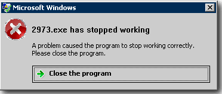

2973.exe 已停止运行（笑）
ABOUT THIS WEBSITE
本站是使用 GitHub Pages 搭建并实际运行的：
[ https://github.com/ThirteenIce2973/Three-Musketeers]
现可使用主域名 [tmes.eu.org]，以及 Cloudflare Pages [three-musketeers.pages.dev]、Netlify App [tm-esports.netlify.app] 访问本站。
（图示）温馨提示：当网页下拉之时，右下角会淡出一个小箭头，这可以帮助我们回到页首：

（图示）温馨提示：名字看不清的可以使用鼠标左键点击一下文本，就像这样：

1. 修复了一些存在的少许bug =-=
1. 更换了成员 2973 在网站上展示的名称 (Nickname)。
2. 更换了成员 2973 的头像 (Avatar)。
3. 修改了一些文案。
1. 更换了联系我们的邮箱。
2. 对一些地方的文本进行了修改。例如：版本号现在为从零开始。
3. 添加了一些有趣的东西：来自 Github hustcc/canvas-nest.js 项目的粒子效果 & 摘自 CSDN 的 Sakura Cat 鼠标指针效果。
1. 对成员名册界面的内容进行了重点字符进行了微小优化。
2. 名册界面新增：小书包文案 (doge)。
1. 对侧边栏的文案内容进行了更新与排版。
2. 将网站图片 ( favicon.ico ) 的背景由原先的透明更改为黑色 ( Black ) 。
3. 更改了成员 HoBoxz 的头像。
4. 在网页尾栏添加了声明文字。
5. 优化并排版了尾栏的样式，移动设备的文字版式得到改善。
1. 为标题栏上方的页面导航栏 "团队博客" 新增了文章显示，现将光标移动至此即可浏览文章题目。
2. 將文章日期显示一栏的格式更改为 English ( US ) 的标准格式。
1. 更换了文章《网站更新一览》一栏的标题栏图片。
2. 将主页界面标题文字的大小更改为 (*.80) 。
3. 将主页界面 "新的团队，新的征程" 板块下方的按钮移动到了标题栏文字下方 。
1. 修复了一些由于打字速度太快而造成的错字问题。
2. 修复了一些已知的bug 。
1. 将主页界面标题栏图片的色阶 (亮度) 输出由原先的完全 (*.255) 调整为 (*.220) 。
2. 在 Bing 的网站管理员工具提交了本站的 URL，并新增了 Sitemap 。
3. 为本站开通了 Microsoft Clarity (微软数据分析服务)，方便查看后台中用户的行为和其他信息资料 。
4. 修复了一些页面和代码之间的bug 。
1. 为本站上线了站内「PROJECT 0714」中最为原始的网站版本：1.0，并将原先的彩蛋页面替换，留作纪念。且1.0版本页面将原封不动，不会再更新。也许，它将成为一段历史。
1. 修复了底边栏友情链接 "STEAM" 一栏中链接失效的问题。
2. 更改了底边栏友情链接 "TENCENT QQ" 一栏链接的引导源。
3. 对一些地方的文案进行了细微更改。
4. 更改了底边栏联络我们 "E-mail" 一栏中的排版和邮箱地址，并添加了一名成员。
1. 在关于我们界面对重点文字新增了粗体和斜体的显示。
2. 稍作了一些区域文案的改动。
3. 对文件较大的图片一律采用 *.webp (WebP Image) 格式以节省空间，加载速度更快。
4. [反馈的更改] 再次加急修复了底边栏友情链接"KOOK"一栏中链接失效的问题。
5. 对一些地方的文字、文案进行了优化。
6. 对底边栏重点的文字新增了粗体和斜体的显示。
1. 更改了团队主页界面 "新的团队，新的征程" 板块下方的按钮样式，并将其改为居中排版。
2. 在团队主页的标题栏主标题上面新增了一行向下淡入的绿色小字，给人一种视觉冲击，达到焕然一新之感。
3. 修复了彩蛋页面英文标题没有在重要区域显示粗体的问题。
4. 在团队主页界面添加了许多背景图，使页面看起来更充实。
1. 缩小了底边栏"友情链接"文字的字号，将其调整为(*.15pt)。
2. 扩大了底边栏"本站链接"文字的字号，将其调整为(*.13.5pt)。
3. 对一些地方的文案作了可视化度的清晰处理。
1. 将底边栏战队LOGO图片向左移动了(*.1px)。
2. 取消了底边栏站点版本号的显示。
3. 修复了底边栏友情链接 "KOOK" 一栏中链接失效的问题，并更换了链接的引导源。
4. 对一些地方的文案进行了稍改。
5. 对团队主页界面"我们所玩的游戏"板块下方浮动栏的游戏图片进行了更换。
1. 解决了站内所有BING搜索框输入文字后无法正确搜索的问题。
2. 更换并重新排版了新的底边栏，使其页面整体来看空间更宽阔，内容要素的实用性得到增强。
3. 将底边栏战队LOGO图片的锐化度调整为(*.-8)，页首LOGO不变。
4. 对一些地方的字距进行了微调。
5. 加急修复了许多前期编码时留下的错误。
6. 修复了某些地方文字显示出错的问题。
7. 微调了成员名册界面标题栏图片的大小。
1. 主要对Tian Liao的文案进行了修改，使其更通顺明了，并执行昵称强制对齐。
2. 去除了底边栏多余的字符，并对一些地方的文案进行了稍微修改。
1. 缩小了成员名册界面标题栏图片的尺寸。
2. 修复了一些文字未能正确显示的bug。
3. 为文章《网站更新一览》一栏新增了标题栏图片。
4. 稍微对一些地方的文案进行了改动。
1. 采用新的方法将成员名册界面的头像圆形化。
2. 修复了成员名册界面标题栏图片压缩后不居中的问题。
1. 修复了一些图片颜色过于黯淡的问题，并提高了清晰度。
2. 优化了主页界面图片显示错误和字距太宽的问题。
3. 对一些地方的文案进行了少许改动。
4. 将关于我们界面标题栏图片的亮度设为(*.-25)，并适当地模糊化。
5. 采用新的方法再次压缩了一些图片，将其保留到較高的清晰度。
6. 再次优化了团队主页界面的UI。
1. 修复了队伍呈现出来的LOGO尺寸过大而导致页首出现一条黑边的情况。
2. 嘘~ 更新了彩蛋界面！
3. 优化了一些地方的文案。
1. 为网站上线了新的正式二级域名。(直到现在为止仍旧可以使用GitHub用户名+仓库名的形式访问本网站)
2. 废除了团队之前所使用的邮箱，改为了以站名+邮箱后缀形式(@outlook)的邮箱直称。
3. 在源代码的附属区块更新了README.md自述文件。
4. 去除了博客界面右侧边栏文章所显示的日期。
5. 主要针对侧边栏做了一些改动。
6. 对某些地方做了较细的小改动。
1. 摸鱼达到了新的高度=-=...
2.主要修复了一些页面的小bug。
1. 稍微优化了一些页面的文案。
2. 更改了底边栏的行距。
3. 修复了时间的显示问题。
1. 修复了团队博客界面的图片显示问题。
2. 修复了一些已知的页面小bug。
3. 稍微优化了关于我们界面的字号以及行距。
4. 修复了文章《网站更新一览》一栏中的页面右边工具栏以及图片的显示问题。
5. 稍微优化了一些文字方面的小细节。
6. 新增了一个...egg？！ 額...貌似就在右边欸...
7. 在底边栏栏新增了版本号的显示。
1. 修復了团队主页界面"我们所玩的游戏"板块中游戏名称中文 (Simplified) 翻译的文字对齐问题，将其设置为向左对齐。
2. 稍微修改了文章《网站更新一览》一栏中的文案，使得其更简明详细。
3. 优化了"我们所玩的游戏"板块各个游戏的标签，让其更贴合本明内容。
4. 在侧边栏更改了由队长天聊提议通过的团队邮箱。
5. 在侧边栏的特别鸣谢处优化了各成员的归类。
6. 主要对FIXER的文案进行了二次优化，并更换了新的用户名。
7. 稍微修改了关于我们界面团队简介的文案，并为一些词语标注了注释
1. 修复了团队主页界面"我们所玩的游戏"板块的字距太近的问题，让其观看更舒适了一些。
2. 修复了成员名册界面标题栏图片仍然不居中的问题。
3. 优化了文章《网站更新一览》一栏中的图片缩放问题，并重新更换了图片。
4. 更改了"我们所玩的游戏"板块各个游戏的标签，并做了缩短处理，使得文字不再超出对应的文本框。
5. 再次压缩了一些文件较大的图片，减少了不必要的占用空间。
1. 去除了团队博客界面标题栏图片 (BLOG-HD) 的白色背景，没有了一片白茫茫的即视感。
2. 修改了成员名册界面标题栏图片的两边字距，使图片比以前更加对称了。
3. 修改了成员Qiu Dao Yu的用户名，由缩写变为详写。
4. 修改了关于我们界面团队简介的文案，使得比之前更详细，更鲜明了。
5. 修复了团队主页界面的一些已知的小bug。
1. 更换了关于我们、成员名册界面标题一栏的图片，使其看起来更加地舒适，贴合UI设计风格。
2. 压缩了一些文件体积较大的图片，让网站服务器加载的内容更少，访问的速度比之前更快了一些。
3. 重新设计并排版了团队博客界面的UI，并新增了搜索、类别、帖子、标签的右边工具栏。
4. 在博客页面新增了第一篇文章：《网站更新一览》by HoBoxz。
5. 主要对EH. Ming Yu的文案进行了修改，并更换了新的用户名。
6. 更换了团队主页最新消息、新闻界面的背景图片。
1. 主要针对LASK的文案进行了稍作修改和优化。
1. 在关于界面的团队简介新增了一段话，更好地发挥了我们团结的精神，也让整个页面看起来更加充实。
2. 在名册界面修改了一些原先不当的文案，并适当地增加了一些内容，优化了一些不起眼的小细节，使得更贴近中心。
3. 为团队博客板块有了较为基本的规划和设计了基本的UI界面。
1. 重新排版了关于与名册界面的UI，使其有了更舒服的即视感。
2. 重新设计了名册界面的文字大小，以及斜体字距，使其减少了压迫感。
3. 在成员名册界面添加了由天聊、FIXER提供的文案，HoBoxz作后续修改。
4. 在特别鸣谢处添加了一位新成员。
1. 优化了少许UI，在关于我们的界面上新增了一个栏目板块。
2. 添加了文字的阴影、加深效果为(*10x10x8 px)。
創建本項目，並開發了主要的内容，也是工程量最大的一個版本，已初步奠定基礎，對應了計算機數列是從 0 開始的，故稱爲 Version "0"。